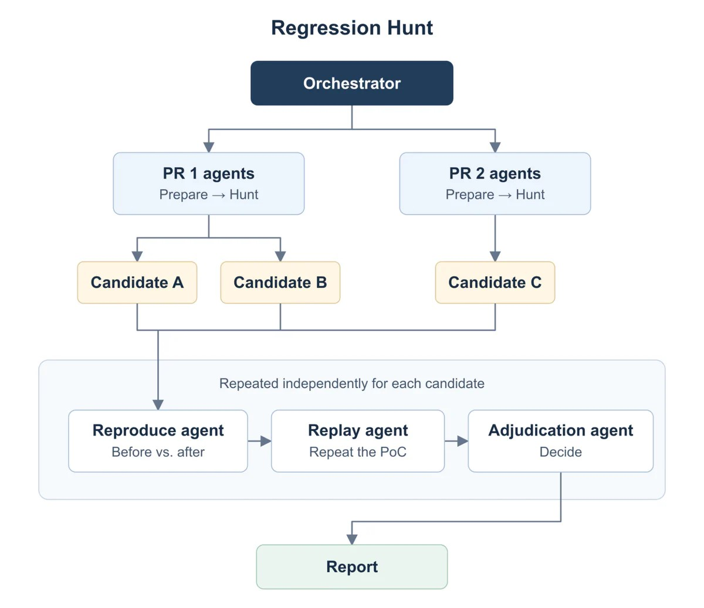

把改代码与证明改对分开
Trail of Bits把patching-bugs与regression-hunt作为一组交付，分别组织修补与检查。代码在十月二十日已经加入公开仓库，二十一日博客介绍，因此本期列为近三日补充而不是今天首次可得。旧流程常是把缺陷描述交给代理，读它给出的修复总结，再由工程师补做验证。新流程把复现、独立确认、实现、证明及回归检查拆成不同角色与保存文件，让维护者能够看见一次判断依据哪个版本和哪次运行。它承接的是补丁准备与审查交接，不能从插件名称推导自动完成生产发布。
Trail of Bits · patching-bugs / regression-hunt · 公开代码／代理修复与回归检查
同一项目的完整分析。研究截止为08:03:02Z；来源核验与图片获取在后，不改变事件日期。

Trail of Bits把patching-bugs与regression-hunt作为一组交付，分别组织修补与检查。代码在十月二十日已经加入公开仓库，二十一日博客介绍，因此本期列为近三日补充而不是今天首次可得。旧流程常是把缺陷描述交给代理，读它给出的修复总结，再由工程师补做验证。新流程把复现、独立确认、实现、证明及回归检查拆成不同角色与保存文件，让维护者能够看见一次判断依据哪个版本和哪次运行。它承接的是补丁准备与审查交接，不能从插件名称推导自动完成生产发布。
patching-bugs要求干净的本地Git检出、可工作的构建和跟踪目录之外的运行目录；主协调者处理一项明确缺陷或可证伪假设，最终不会自行推送或开PR。回归插件可接收PR、提交或指定范围，执行资源与权限由宿主提供。项目的威胁模型和修补规范用于说明哪些行为必须保留、什么才算缺陷。辅助脚本要求Python3.13以上，但这些脚本只检查记录和组织运行，不替人或代理判断证据是否真实。对于缺少可复现环境的仓库，前期建立基线仍是采用成本，不能因为安装了插件便跳过。
修复工作流要求同一复现分别跑在原始代码、修补代码和完整撤回代码上：原先失败、修补后通过、撤回后再次失败，才能更有把握把变化归于补丁而不是环境碰巧改变。回归工作流则从差异追到真实可达接口，在前后部署中复现，再交给新上下文代理重放与裁定。输出可以是确认回归、原有缺陷、修复不完整或未决；缺少证据不等于没有问题。这里的独立指新上下文与保存材料的核对，不意味着所有代理错误都相互独立，更不替代维护者阅读真实运行记录。
作者用已经确认的二十一个回归评估插件，相较一般的Codex回归审查提示，报告误报数量减少百分之二十五，置信区间为百分之十四到三十八；严格证据要求也使部分已知回归停留在边界状态。这是作者自己的初步评估，不能写成普遍提高百分之二十五准确率。对维护者，误报减少可以节省审查，但未决结果仍会占用排查时间，不能从确认列表消失就视为已消除风险。采购或采用时应同时观察真缺陷确认数、误报和未决比例，并保留每类的分母与选择方式。
运行记录采用哈希核对，恢复时先检查材料与代理状态，源代码或复现变化后要重新执行受影响的后续步骤；这是文档中的工作约定，不是本刊运行成功的证明。手工同行审查、现有CI和逐条复现仍是比较对象。可以在自有无害缺陷集上对照总审查时间、重放成功率、未决案例定位成本，以及维护者是否能从HTML报告找到原始证据。仓库采用CC BY-SA4.0，不能随意标成MIT或默认所有商业集成都同样简单。若报告更长却仍要工程师从头重建每个实验，插件只改变文档形式；价值成立需要保存的证据真正减少交接劳动。